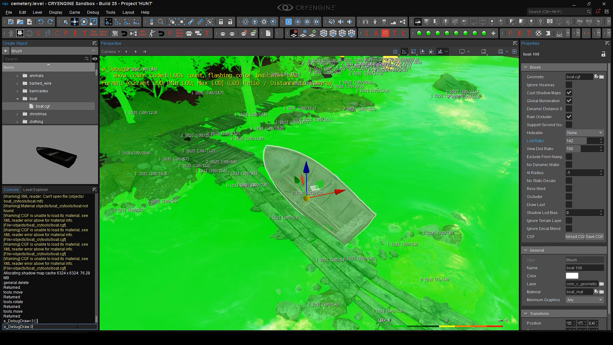
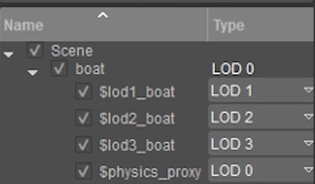
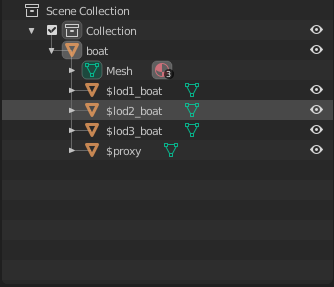

Introduction
In the following tutorial, you will find out how to set up LoDs for your assets using any version of Blender, as well as properly setting up the hierarchy for the best results. 
LoDs in CRYENGINE
This tutorial is based on the FBX pipeline, meaning that no 3rd-party plugins or tools will be needed in order to achieve the right results. CRYENGINE has a solid implementation for .fbx format support, meaning that the Engine will be able to natively read and recognize .fbx setups quite easily; allowing us to achieve the results we want, without using any Crytek plugins.
The term LoD, which is short for Level of Detail, involves the concept of decreasing the quality of an asset based on its distance from the player camera’s perspective. LoDs are counted backwards, meaning that the highest quality version of the asset will be defined as LoD0, and the lowest quality will be the highest LoD number.
Naming Scheme
Instead of having to manually determine which LoD is which, as soon as we import the asset into CRYENGINE using the in-built FBX Importer, we use the $ symbol in the name of the right geometry element, which will help us force that specific geometry element to act as a certain LoD.

LoDs hierarchy in FBX Importer
The naming structure is as follows: $lod#_meshname, where # will be replaced by the LoD number, and the meshname will be replaced by the name of the parent mesh (the original name of the LoD0 version of the asset).
We will only be using the $lod method starting with $lod1, since LoD0 will be the parent of the hierarchy and will retain the name of the original asset; the way you would want to see it in the the Asset Browser.
Hierarchy Setup
All LoDs will be parented right beneath the LoD0 version of the asset, together with $proxy.

LoD hierarchy in Blender
Material Setup
All LoDs will be using the same exact materials that we use for LoD0. The texture quality will decrease automatically based on distance, and the quality has nothing to do with the complexity of the geometry. That way, we don’t need to configure anything in the material. We only need to make sure that the materials are properly assigned to all LoDs before exporting the object as an .fbx file.
Importing Setup
As soon as we export the .fbx file from Blender, we can drag it into the FBX Mesh Importer and we should already have all LoDs automatically assigned to the right geometry elements. All that’s left to do is to physicalize the proxy, generate a material for the asset and to save it in the desired location.